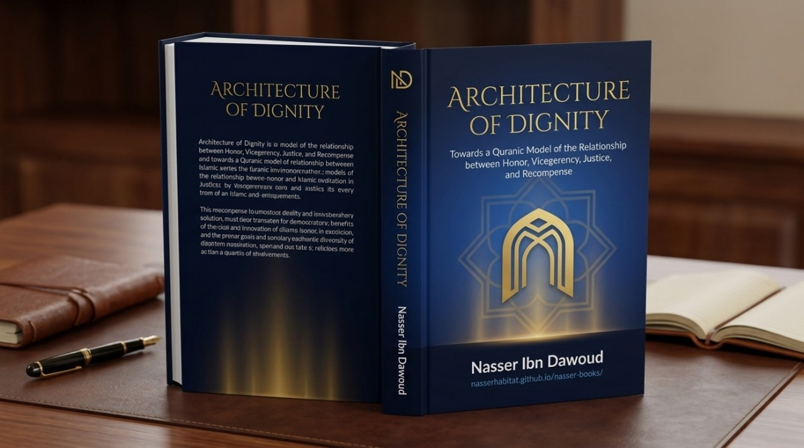

Nasser Ibn Dawood

Text extracted from the author-supplied Word edition; consult the original source.
Preparing the reader…
I. The Global Knowledge Manifesto
Knowledge is a universal right. The author firmly believes that wisdom should not be locked behind paywalls or language barriers.
Global Access Policy: All books in this library are available for free in multiple digital formats (PDF, HTML, DOCX, TXT).
The Digital Library: As of early 2026, the collection hosts 68 volumes (34 in Arabic and 34 in English), fully optimized for AI-assisted research and digital archiving.
Official Platforms:
Main Website: nasserhabitat.github.io/nasser-books/
GitHub: nasserhabitat/nasser-books
II. Translator’s Note: The Bridge of Meaning
This English edition is a condensed conceptual adaptation. It is not a word-for-word translation, but rather an "extraction of essence." It presents the core philosophical framework in accessible English, omitting the exhaustive linguistic debates and classical references found in the original Arabic text.
For the academic researcher: The original Arabic version remains the primary source for comprehensive linguistic analysis, detailed exegesis (Tafsir), and the complete bibliography.
III. Introduction: The Crisis of Fragmented Concepts
The central thesis of this work is that modern humanity's primary challenge with the Qur'an is not the absence of its text, nor the scarcity of its concepts, but rather the disconnection between these concepts.
Terms like dignity, vicegerency, obligation, justice, and recompense often appear in contemporary readings as isolated islands of knowledge. This book offers an alternative: an architectural reading that explores the functional relationships and networks that organize these terms within a unified Quranic vision. The goal is to transition from the question, "What does dignity mean?" to the more operative question, "How does dignity function within the system of human responsibility?"
IV. The Architectural Framework: A Methodological Covenant
Before constructing any model, the book establishes a strict methodological covenant to prevent the model from becoming a substitute for the text.
A. The Four Levels of Reading
The Text (النص - [ن]): The literal Quranic wording, the supreme and untouchable reference.
The Exegesis (البيان - [ب]): What emerges from context, linguistic usage, and semantic fields.
The Induction (الاستنباط - [ا]): The relationships derived by synthesizing multiple textual evidences.
The Model (النموذج - [م]): The explanatory map constructed by the researcher to organize these relationships.
B. The Rule of Non-Transferability
No properties of the modern model (e.g., technical, computational, or mechanical properties) may be transferred back to the divine text. The model serves the text; the text does not serve the model.
C. The Boundary of Knowledge (الحد - [ح])
The architectural model must stop precisely where the textual evidence ends. It does not claim to unveil the how of the unseen (ghayb), nor does it reduce metaphysical realities to physical or algorithmic explanations.
V. The Core of the Model: The Architecture of Dignity
The book argues that human dignity in the Qur'an operates on three interconnected levels, governed by recurring divine laws (sunan).
A. Level One: Ontological Dignity (The Constant Foundation)
“And We have certainly honored the children of Adam” (Qur'an 17:70).
Nature: A fixed, universal endowment granted to every human being regardless of their actions, gender, ethnicity, or creed.
Function: It serves as the prerequisite for obligation (taklif). It opens the door for divine address, making humanity legally and morally accountable.
B. Level Two: Acquired Dignity (The Variable Pathway)
“Indeed, the most noble of you in the sight of Allah is the most righteous of you” (Qur'an 49:13).
Nature: A variable state that increases with piety (taqwa) and righteous action, and diminishes with transgression and moral corruption.
Function: It represents the dynamic interplay between divine endowment and human response. It bridges the gap between being honored and becoming honorable.
C. Level Three: Recompensed Dignity (The Final Validation)
“And every soul will be fully compensated for what it did” (Qur'an 39:70).
Nature: The culmination of the first two levels in the afterlife.
Function: It manifests as perfect, untainted dignity for the righteous, and the veiling of dignity for those who rejected guidance. It represents the absolute justice of God, ensuring no soul is wronged.
VI. The Governing Laws (The Sunan of Dignity)
The transition of dignity from ontology to action is governed by four recurring cosmic patterns: